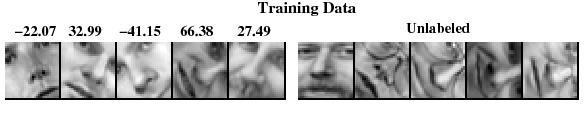
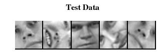

MLSS Tutorial on:
Deep Belief Nets
(An updated and extended version of my 2007 NIPS tutorial)
Geoffrey Hinton
Canadian Institute for Advanced Research
&
Department of Computer Science
University of Toronto
Some things you will learn in this tutorial
• How to learn multi-layer generative models of unlabelled
data by learning one layer of features at a time.
– How to add Markov Random Fields in each hidden layer.
• How to use generative models to make discriminative
training methods work much better for classification and
regression.
– How to extend this approach to Gaussian Processes and
how to learn complex, domain-specific kernels for a
Gaussian Process.
• How to perform non-linear dimensionality reduction on very
large datasets
– How to learn binary, low-dimensional codes and how to
use them for very fast document retrieval.
• How to learn multilayer generative models of high-
dimensional sequential data.
A spectrum of machine learning tasks
Typical Statistics------------Artificial Intelligence
• Low-dimensional data (e.g.
• High-dimensional data (e.g.
less than 100 dimensions)
more than 100 dimensions)
• The noise is not sufficient to
• Lots of noise in the data
obscure the structure in the
data if we process it right.
•
• There is a huge amount of
There is not much structure in
structure in the data, but the
the data, and what structure
structure is too complicated to
there is, can be represented by
be represented by a simple
a fairly simple model.
model.
• The main problem is figuring
• The main problem is
out a way to represent the
distinguishing true structure
complicated structure so that it
from noise.
can be learned.
Historical background:
First generation neural networks
• Perceptrons (~1960)
Bomb
Toy
output units
used a layer of hand-
e.g. class labels
coded features and tried
to recognize objects by
learning how to weight
these features.
non-adaptive
– There was a neat
hand-coded
features
learning algorithm for
adjusting the weights.
– But perceptrons are
input units
fundamentally limited
e.g. pixels
in what they can learn
to do.
Sketch of a typical
perceptron from the 1960’s
Second generation neural networks (~1985)
Compare outputs with
Back-propagate
co
rrect answer to get
error signal to
error signal
get derivatives
for learning
outputs
hidden
layers
input vector
A temporary digression
• Vapnik and his co-workers developed a very clever type
of perceptron called a Support Vector Machine.
– Instead of hand-coding the layer of non-adaptive
features, each training example is used to create a
new feature using a fixed recipe.
• The feature computes how similar a test example is to that
training example.
– Then a clever optimization technique is used to select
the best subset of the features and to decide how to
weight each feature when classifying a test case.
• But its just a perceptron and has all the same limitations.
• In the 1990’s, many researchers abandoned neural
networks with multiple adaptive hidden layers because
Support Vector Machines worked better.
What is wrong with back-propagation?
• It requires labeled training data.
– Almost all data is unlabeled.
• The learning time does not scale well
– It is very slow in networks with multiple
hidden layers.
• It can get stuck in poor local optima.
– These are often quite good, but for deep
nets they are far from optimal.
Overcoming the limitations of back-
propagation
• Keep the efficiency and simplicity of using a
gradient method for adjusting the weights, but use
it for modeling the structure of the sensory input.
– Adjust the weights to maximize the probability
that a generative model would have produced
the sensory input.
– Learn p(image) not p(label | image)
• If you want to do computer vision, first learn
computer graphics
• What kind of generative model should we learn?
Belief Nets
• A belief net is a directed
stochastic
acyclic graph composed of
hidden
stochastic variables.
cause
• We get to observe some of
the variables and we would
like to solve two problems:
• The inference problem: Infer
the states of the unobserved
variables.
visible
• The learning problem: Adjust
effect
the interactions between
We will use nets composed of
variables to make the
layers of stochastic binary variables
network more likely to
with weighted connections. Later,
we will generalize to other types of
generate the observed data.
variable.
Stochastic binary units
(Bernoulli variables)
•
1
These have a state of 1
or 0.
p(
)
1
i
s
• The probability of
turning on is determined
0
by the weighted input
0
b
from other units (plus a
i
sjwji
bias)
j
1
p(s )
1
i
1 exp(b
i
sjwji)
j
Learning Deep Belief Nets
• It is easy to generate an
unbiased example at the
stochastic
leaf nodes, so we can see
hidden
what kinds of data the
cause
network believes in.
• It is hard to infer the
posterior distribution over
all possible configurations
of hidden causes.
• It is hard to even get a
sample from the posterior.
visible
effect
• So how can we learn deep
belief nets that have
millions of parameters?
The learning rule for sigmoid belief nets
• Learning is easy if we can
s
j
j
get an unbiased sample
w ji
from the posterior
distribution over hidden
i
si
states given the observed
data.
1
p p(s )
1
i
i
• For each unit, maximize
1 exp( s jwji)
the log probability that its
j
binary state in the sample
w
s (s p )
ji
j
i
i
from the posterior would be
generated by the sampled
learning
binary states of its parents.
rate
Explaining away (Judea Pearl)
• Even if two hidden causes are independent, they can
become dependent when we observe an effect that they can
both influence.
– If we learn that there was an earthquake it reduces the
probability that the house jumped because of a truck.
-10
-10
truck hits house
earthquake
20
20
posterior
p(1,1)=.0001
p(1,0)=.4999
-20
house jumps
p(0,1)=.4999
p(0,0)=.0001
Why it is usually very hard to learn
sigmoid belief nets one layer at a time
• To learn W, we need the posterior
distribution in the first hidden layer.
• Problem 1: The posterior is typically
hidden variables
complicated because of “explaining
away”.
• Problem 2: The posterior depends
hidden variables
on the prior as well as the likelihood.
– So to learn W, we need to know
prior
the weights in higher layers, even
if we are only approximating the
hidden variables
posterior. All the weights interact.
•
likelihood
W
Problem 3: We need to integrate
over all possible configurations of
data
the higher variables to get the prior
for first hidden layer. Yuk!
Some methods of learning
deep belief nets
• Monte Carlo methods can be used to sample
from the posterior.
– But its painfully slow for large, deep models.
• In the 1990’s people developed variational
methods for learning deep belief nets
– These only get approximate samples from the
posterior.
– Nevetheless, the learning is still guaranteed to
improve a variational bound on the log
probability of generating the observed data.
The breakthrough that makes deep
learning efficient
• To learn deep nets efficiently, we need to learn one layer
of features at a time. This does not work well if we
assume that the latent variables are independent in the
prior :
– The latent variables are not independent in the
posterior so inference is hard for non-linear models.
– The learning tries to find independent causes using
one hidden layer which is not usually possible.
• We need a way of learning one layer at a time that takes
into account the fact that we will be learning more
hidden layers later.
– We solve this problem by using an undirected model.
Two types of generative neural network
• If we connect binary stochastic neurons in a
directed acyclic graph we get a Sigmoid Belief
Net (Radford Neal 1992).
• If we connect binary stochastic neurons using
symmetric connections we get a Boltzmann
Machine (Hinton & Sejnowski, 1983).
– If we restrict the connectivity in a special way,
it is easy to learn a Boltzmann machine.
Restricted Boltzmann Machines
(Smolensky ,1986, called them “harmoniums”)
• We restrict the connectivity to make
learning easier.
hidden
– Only one layer of hidden units.
•
j
We will deal with more layers later
– No connections between hidden units.
• In an RBM, the hidden units are
conditionally independent given the
i
visible states.
visible
– So we can quickly get an unbiased
sample from the posterior distribution
when given a data-vector.
– This is a big advantage over directed
belief nets
The Energy of a joint configuration
(ignoring terms to do with biases)
binary state of
binary state of
visible unit i
hidden unit j
E(v,h) i
v h j ij
w
i, j
Energy with configuration
weight between
v on the visible units and
units i and j
h on the hidden units
E
(v,h
) v hij
w
ij
Weights Energies Probabilities
• Each possible joint configuration of the visible
and hidden units has an energy
– The energy is determined by the weights and
biases (as in a Hopfield net).
• The energy of a joint configuration of the visible
and hidden units determines its probability:
E(v,h)
p(v, h) e
• The probability of a configuration over the visible
units is found by summing the probabilities of all
the joint configurations that contain it.
Using energies to define probabilities
E(v,h)
•
e
The probability of a joint
p(v, h)
configuration over both visible
E(u,g
e
)
and hidden units depends on
the energy of that joint
u,g
partition
configuration compared with
function
the energy of all other joint
configurations.
E(v,h)
•
e
The probability of a
configuration of the visible
p(v) h
units is the sum of the
E(u,g)
probabilities of all the joint
e
configurations that contain it.
u,g
A picture of the maximum likelihood learning
algorithm for an RBM
j
j
j
j
0
v
v
ih j
ih j
a fantasy
i
i
i
i
t = 0 t = 1 t = 2 t = infinity
Start with a training vector on the visible units.
Then alternate between updating all the hidden units in
parallel and updating all the visible units in parallel.
log p(v)
0
v h v h
i j
i j
ij
w
A quick way to learn an RBM
j
j
Start with a training vector on the
visible units.
0
v
1
v
ih j
ih j
Update all the hidden units in
parallel
i
i
Update the all the visible units in
parallel to get a “reconstruction”.
t = 0 t = 1
Update the hidden units again.
data
reconstruction
w (
0
1
v h v h )
ij
i j
i j
This is not following the gradient of the log likelihood. But it
works well. It is approximately following the gradient of another
objective function (Carreira-Perpinan & Hinton, 2005).
How to learn a set of features that are good for
reconstructing images of the digit 2
50 binary
50 binary
feature
feature
neurons
neurons
Increment weights
Decrement weights
between an active
between an active
pixel and an active
pixel and an active
feature
feature
16 x 16
16 x 16
pixel
pixel
image
image
data
reconstruction
(reality)
(better than reality)
The final 50 x 256 weights
Each neuron grabs a different feature.

How well can we reconstruct the digit images
from the binary feature activations?
Reconstruction
Reconstruction
from activated
from activated
Data
binary features
Data
binary features
New test images from
Images from an
the digit class that the
unfamiliar digit class
model was trained on
(the network tries to see
every image as a 2)
Three ways to combine probability density
models (an underlying theme of the tutorial)
• Mixture: Take a weighted average of the distributions.
– It can never be sharper than the individual distributions.
It’s a very weak way to combine models.
• Product: Multiply the distributions at each point and then
renormalize (this is how an RBM combines the distributions defined
by each hidden unit)
– Exponentially more powerful than a mixture. The
normalization makes maximum likelihood learning
difficult, but approximations allow us to learn anyway.
• Composition: Use the values of the latent variables of one
model as the data for the next model.
– Works well for learning multiple layers of representation,
but only if the individual models are undirected.
Training a deep network
(the main reason RBM’s are interesting)
• First train a layer of features that receive input directly
from the pixels.
• Then treat the activations of the trained features as if
they were pixels and learn features of features in a
second hidden layer.
• It can be proved that each time we add another layer of
features we improve a variational lower bound on the log
probability of the training data.
– The proof is slightly complicated.
– But it is based on a neat equivalence between an
RBM and a deep directed model (described later)
The generative model after learning 3 layers
•
To generate data:
h3
1. Get an equilibrium sample
from the top-level RBM by
3
W
performing alternating Gibbs
sampling for a long time.
h2
2. Perform a top-down pass to
get states for all the other
2
W
layers.
h1
So the lower level bottom-up
1
W
connections are not part of
data
the generative model. They
are just used for inference.
Why does greedy learning work?
An aside: Averaging factorial distributions
• If you average some factorial distributions, you
do NOT get a factorial distribution.
– In an RBM, the posterior over the hidden units
is factorial for each visible vector.
– But the aggregated posterior over all training
cases is not factorial (even if the data was
generated by the RBM itself).
Why does greedy learning work?
• Each RBM converts its data distribution
into an aggregated posterior distribution
over its hidden units.
p(h |W )
•
Task 2
This divides the task of modeling its
data into two tasks:
– Task 1: Learn generative weights
aggregated
that can convert the aggregated
posterior distribution over the hidden
posterior distribution
units back into the data distribution.
on hidden units
– Task 2: Learn to model the
aggregated posterior distribution
over the hidden units.
p(v | ,
h W )
Task 1
– The RBM does a good job of task 1
and a moderately good job of task 2.
• Task 2 is easier (for the next RBM) than
modeling the original data because the
data distribution
aggregated posterior distribution is
on visible units
closer to a distribution that an RBM can
model perfectly.
Why does greedy learning work?
The weights, W, in the bottom level RBM define
p(v|h) and they also, indirectly, define p(h).
So we can express the RBM model as
p(v) p(h) p(v | h)
h
If we leave p(v|h) alone and improve p(h), we will
improve p(v).
To improve p(h), we need it to be a better model of
the aggregated posterior distribution over hidden
vectors produced by applying W to the data.
Which distributions are factorial in a
directed belief net?
• In a directed belief net with one hidden layer, the
posterior over the hidden units p(h|v) is non-
factorial (due to explaining away).
– The aggregated posterior is factorial if the
data was generated by the directed model.
• It’s the opposite way round from an undirected
model which has factorial posteriors and a non-
factorial prior p(h) over the hiddens.
• The intuitions that people have from using directed
models are very misleading for undirected models.
Why does greedy learning fail in a directed module?
• A directed module also converts its data
distribution into an aggregated posterior
p(h | W )
2
Task 2
– Task 1 The learning is now harder
because the posterior for each training
case is non-factorial.
aggregated
– Task 2 is performed using an
posterior distribution
independent prior. This is a very bad
approximation unless the aggregated
on hidden units
posterior is close to factorial.
Task 1
p(v | ,
h W )
• A directed module attempts to make the
1
aggregated posterior factorial in one step.
– This is too difficult and leads to a bad
compromise. There is also no
data distribution
guarantee that the aggregated
on visible units
posterior is easier to model than the
data distribution.
A model of digit recognition
The top two layers form an
associative memory whose
2000 top-level neurons
energy landscape models the low
dimensional manifolds of the
digits.
10 label
The energy valleys have names
500 neurons
neurons
The model learns to generate
500 neurons
combinations of labels and images.
To perform recognition we start with a
neutral state of the label units and do
28 x 28
an up-pass from the image followed
pixel
by a few iterations of the top-level
image
associative memory.
Fine-tuning with a contrastive version of the
“wake-sleep” algorithm
After learning many layers of features, we can fine-tune
the features to improve generation.
1. Do a stochastic bottom-up pass
– Adjust the top-down weights to be good at
reconstructing the feature activities in the layer below.
2. Do a few iterations of sampling in the top level RBM
-- Adjust the weights in the top-level RBM.
3. Do a stochastic top-down pass
– Adjust the bottom-up weights to be good at
reconstructing the feature activities in the layer above.
Show the movie of the network
generating digits
(available at www.cs.toronto/~hinton)
Samples generated by letting the associative
memory run with one label clamped. There are
1000 iterations of alternating Gibbs sampling
between samples.
Examples of correctly recognized handwritten digits
that the neural network had never seen before
Its very
good
How well does it discriminate on MNIST test set with
no extra information about geometric distortions?
• Generative model based on RBM’s 1.25%
• Support Vector Machine (Decoste et. al.)
1.4%
• Backprop with 1000 hiddens (Platt) ~1.6%
• Backprop with 500 -->300 hiddens ~1.6%
• K-Nearest Neighbor ~ 3.3%
• See Le Cun et. al. 1998 for more results
• Its better than backprop and much more neurally plausible
because the neurons only need to send one kind of signal,
and the teacher can be another sensory input.
Unsupervised “pre-training” also helps for
models that have more data and better priors
• Ranzato et. al. (NIPS 2006) used an additional
600,000 distorted digits.
• They also used convolutional multilayer neural
networks that have some built-in, local
translational invariance.
Back-propagation alone: 0.49%
Unsupervised layer-by-layer
pre-training followed by backprop: 0.39% (record)
Another view of why layer-by-layer
learning works (Hinton, Osindero & Teh 2006)
• There is an unexpected equivalence between
RBM’s and directed networks with many layers
that all use the same weights.
– This equivalence also gives insight into why
contrastive divergence learning works.
An infinite sigmoid belief net
etc.
that is equivalent to an RBM
T
W
h2
• The distribution generated by this
infinite directed net with replicated
W
weights is the equilibrium distribution
v2
for a compatible pair of conditional
T
W
distributions: p(v|h) and p(h|v) that
h
are both defined by W
1
– A top-down pass of the directed
W
net is exactly equivalent to letting
v1
a Restricted Boltzmann Machine
T
W
settle to equilibrium.
h0
– So this infinite directed net
defines the same distribution as
W
an RBM.
v0
Inference in a directed net
etc.
with replicated weights
T
W
•
h2
The variables in h0 are conditionally
independent given v0.
W
– Inference is trivial. We just
v2
multiply v0 by W transpose.
T
W
– The model above h0 implements
a complementary prior.
h1
– Multiplying v0 by W transpose
W
gives the product of the likelihood
v1
term and the prior term.
T
•
+
+
Inference in the directed net is
W
exactly equivalent to letting a
h0
Restricted Boltzmann Machine
W
settle to equilibrium starting at the
+
+
data.
v0
etc.
T
•
W
The learning rule for a sigmoid belief
2
net is:
h2 s j
w
s (s ˆs )
T
ij
j
i
i
W
W
v
2
2 si
• With replicated weights this becomes:
T
W
W
s0 (s0 s1)
h
1
1
s j
j
i
i
T
W
W
s1(s0 s1 )
1
i
j
j
v1 si
1
1
2
T
s (s s )
W
W
j
i
i
...
h
0
0
s j
s j i
s
T
W
W
v
0
0 si
Learning a deep directed
etc.
network
T
W
• First learn with all the weights tied
h2
– This is exactly equivalent to
W
learning an RBM
v2
– Contrastive divergence learning
T
W
is equivalent to ignoring the small
h
derivatives contributed by the tied
1
weights between deeper layers.
W
v1
T
W
h0
h0
W
W
v0
v0
• Then freeze the first layer of weights
etc.
in both directions and learn the
T
W
remaining weights (still tied
together).
h2
– This is equivalent to learning
W
another RBM, using the
v2
aggregated posterior distribution
T
W
of h0 as the data.
h1
W
v1
v1
T
W
W
h0
h0
T
W
W frozen
frozen
v0
How many layers should we use and how
wide should they be?
• There is no simple answer.
– Extensive experiments by Yoshua Bengio’s group
(described later) suggest that several hidden layers is
better than one.
– Results are fairly robust against changes in the size of a
layer, but the top layer should be big.
• Deep belief nets give their creator a lot of freedom.
– The best way to use that freedom depends on the task.
– With enough narrow layers we can model any distribution
over binary vectors (Sutskever & Hinton, 2007)
What happens when the weights in higher layers
become different from the weights in the first layer?
• The higher layers no longer implement a complementary
prior.
– So performing inference using the frozen weights in
the first layer is no longer correct. But its still pretty
good.
– Using this incorrect inference procedure gives a
variational lower bound on the log probability of the
data.
• The higher layers learn a prior that is closer to the
aggregated posterior distribution of the first hidden layer.
– This improves the network’s model of the data.
• Hinton, Osindero and Teh (2006) prove that this
improvement is always bigger than the loss in the variational
bound caused by using less accurate inference.
An improved version of Contrastive
Divergence learning (if time permits)
• The main worry with CD is that there will be deep
minima of the energy function far away from the
data.
– To find these we need to run the Markov chain for
a long time (maybe thousands of steps).
– But we cannot afford to run the chain for too long
for each update of the weights.
• Maybe we can run the same Markov chain over
many weight updates? (Neal, 1992)
– If the learning rate is very small, this should be
equivalent to running the chain for many steps
and then doing a bigger weight update.
Persistent CD
(Tijmen Teileman, ICML 2008 & 2009)
• Use minibatches of 100 cases to estimate the
first term in the gradient. Use a single batch of
100 fantasies to estimate the second term in the
gradient.
• After each weight update, generate the new
fantasies from the previous fantasies by using
one alternating Gibbs update.
– So the fantasies can get far from the data.
Contrastive divergence as an
adversarial game
• Why does persisitent CD work so well with only
100 negative examples to characterize the
whole partition function?
– For all interesting problems the partition
function is highly multi-modal.
– How does it manage to find all the modes
without starting at the data?
The learning causes very fast mixing
• The learning interacts with the Markov chain.
• Persisitent Contrastive Divergence cannot be
analysed by viewing the learning as an outer loop.
– Wherever the fantasies outnumber the
positive data, the free-energy surface is
raised. This makes the fantasies rush around
hyperactively.


How persistent CD moves between the
modes of the model’s distribution
• If a mode has more fantasy
particles than data, the free-
energy surface is raised until
the fantasy particles escape.
– This can overcome free-
energy barriers that would
be too high for the Markov
Chain to jump.
• The free-energy surface is
being changed to help
mixing in addition to defining
the model.
Summary so far
• Restricted Boltzmann Machines provide a simple way to
learn a layer of features without any supervision.
– Maximum likelihood learning is computationally
expensive because of the normalization term, but
contrastive divergence learning is fast and usually
works well.
• Many layers of representation can be learned by treating
the hidden states of one RBM as the visible data for
training the next RBM (a composition of experts).
• This creates good generative models that can then be
fine-tuned.
– Contrastive wake-sleep can fine-tune generation.
BREAK
Overview of the rest of the tutorial
• How to fine-tune a greedily trained generative
model to be better at discrimination.
• How to learn a kernel for a Gaussian process.
• How to use deep belief nets for non-linear
dimensionality reduction and document retrieval.
• How to learn a generative hierarchy of
conditional random fields.
• A more advanced learning module for deep
belief nets that contains multiplicative
interactions.
• How to learn deep models of sequential data.
Fine-tuning for discrimination
• First learn one layer at a time greedily.
• Then treat this as “pre-training” that finds a good
initial set of weights which can be fine-tuned by
a local search procedure.
– Contrastive wake-sleep is one way of fine-
tuning the model to be better at generation.
• Backpropagation can be used to fine-tune the
model for better discrimination.
– This overcomes many of the limitations of
standard backpropagation.
Why backpropagation works better with
greedy pre-training: The optimization view
• Greedily learning one layer at a time scales well
to really big networks, especially if we have
locality in each layer.
• We do not start backpropagation until we already
have sensible feature detectors that should
already be very helpful for the discrimination task.
– So the initial gradients are sensible and
backprop only needs to perform a local search
from a sensible starting point.
Why backpropagation works better with
greedy pre-training: The overfitting view
• Most of the information in the final weights comes from
modeling the distribution of input vectors.
– The input vectors generally contain a lot more
information than the labels.
– The precious information in the labels is only used for
the final fine-tuning.
– The fine-tuning only modifies the features slightly to get
the category boundaries right. It does not need to
discover features.
• This type of backpropagation works well even if most of
the training data is unlabeled.
– The unlabeled data is still very useful for discovering
good features.
First, model the distribution of digit images
The top two layers form a restricted
2000 units
Boltzmann machine whose free energy
landscape should model the low
dimensional manifolds of the digits.
500 units
The network learns a density model for
unlabeled digit images. When we generate
from the model we get things that look like
500 units
real digits of all classes.
But do the hidden features really help with
digit discrimination?
28 x 28
pixel
Add 10 softmaxed units to the top and do
image
backpropagation.
Results on permutation-invariant MNIST task
• Very carefully trained backprop net with 1.6%
one or two hidden layers (Platt; Hinton)
• SVM (Decoste & Schoelkopf, 2002) 1.4%
• Generative model of joint density of 1.25%
images and labels (+ generative fine-tuning)
• Generative model of unlabelled digits 1.15%
followed by gentle backpropagation
(Hinton & Salakhutdinov, Science 2006)
Learning Dynamics of Deep Nets
the next 4 slides describe work by Yoshua Bengio’s group
Before fine-tuning
After fine-tuning
Effect of Unsupervised Pre-training
Erhan et. al. AISTATS’2009
64
Effect of Depth
without pre-training
with pre-training
w/o pre-training
65

Learning Trajectories in Function Space
(a 2-D visualization produced with t-SNE)
Erhan et. al. AISTATS’2009
• Each point is a
model in function
space
• Color = epoch
• Top: trajectories
without pre-training.
Each trajectory
converges to a
different local min.
• Bottom: Trajectories
with pre-training.
• No overlap!

Why unsupervised pre-training makes sense
stuff
stuff
high
low
bandwidth
bandwidth
image
label
image
label
If image-label pairs were
If image-label pairs are
generated this way, it
generated this way, it
would make sense to try
makes sense to first learn
to go straight from
to recover the stuff that
images to labels.
caused the image by
For example, do the
inverting the high
pixels have even parity?
bandwidth pathway.
Modeling real-valued data
• For images of digits it is possible to represent
intermediate intensities as if they were probabilities by
using “mean-field” logistic units.
– We can treat intermediate values as the probability
that the pixel is inked.
• This will not work for real images.
– In a real image, the intensity of a pixel is almost
always almost exactly the average of the neighboring
pixels.
– Mean-field logistic units cannot represent precise
intermediate values.
Replacing binary variables by
integer-valued variables
(Teh and Hinton, 2001)
• One way to model an integer-valued variable is
to make N identical copies of a binary unit.
• All copies have the same probability,
of being “on” : p = logistic(x)
– The total number of “on” copies is like the
firing rate of a neuron.
– It has a binomial distribution with mean N p
and variance N p(1-p)
A better way to implement integer values
• Make many copies of a binary unit.
• All copies have the same weights and the same
adaptive bias, b, but they have different fixed offsets to
the bias:
b
,
5
.
0
b
,
5
.
1
b
,
5
.
2
b
,
5
.
3
....
x
A fast approximation
n
logisti (
c x
5
.
0 n)
log 1
(
x
e )
n 1
• Contrastive divergence learning works well for the sum of
binary units with offset biases.
• It also works for rectified linear units. These are much faster
to compute than the sum of many logistic units.
output = max(0, x + randn*sqrt(logistic(x)) )
How to train a bipartite network of rectified
linear units
• Just use contrastive divergence to lower the energy of
data and raise the energy of nearby configurations that
the model prefers to the data.
Start with a training vector on the
j
j
visible units.
v h
Update all hidden units in parallel
i
j
data
v h
i
j
recon
with sampling noise
Update the visible units in parallel
i
i
to get a “reconstruction”.
data
reconstruction
Update the hidden units again
w ( v h
v h
)
ij
i
j
data
i
j
recon
3D Object Recognition: The NORB dataset
Stereo-pairs of grayscale images of toy objects.
Animals
Humans
Normalized-
Planes
uniform
version of
NORB
Trucks
Cars
- 6 lighting conditions, 162 viewpoints
-Five object instances per class in the training set
- A different set of five instances per class in the test set
- 24,300 training cases, 24,300 test cases
Simplifying the data
• Each training case is a stereo-pair of 96x96 images.
– The object is centered.
– The edges of the image are mainly blank.
– The background is uniform and bright.
• To make learning faster I used simplified the data:
– Throw away one image.
– Only use the middle 64x64 pixels of the other
image.
– Downsample to 32x32 by averaging 4 pixels.
Simplifying the data even more so that it can
be modeled by rectified linear units
• The intensity histogram for each 32x32 image has a
sharp peak for the bright background.
• Find this peak and call it zero.
• Call all intensities brighter than the background zero.
• Measure intensities downwards from the background
intensity.
0
Test set error rates on NORB after greedy
learning of one or two hidden layers using
rectified linear units
Full NORB (2 images of 96x96)
• Logistic regression on the raw pixels 20.5%
• Gaussian SVM (trained by Leon Bottou) 11.6%
• Convolutional neural net (Le Cun’s group) 6.0%
(convolutional nets have knowledge of translations built in)
Reduced NORB (1 image 32x32)
• Logistic regression on the raw pixels 30.2%
• Logistic regression on first hidden layer 14.9%
• Logistic regression on second hidden layer 10.2%
The
receptive
fields of
some
rectified
linear
hidden
units.
A standard type of real-valued visible unit
• We can model pixels as
Gaussian variables.
Alternating Gibbs
E
sampling is still easy,
though learning needs to
be much slower.
b
v
i
i
energy-gradient
parabolic
produced by the total
containment
input to a visible unit
function
(
2
i
v
i
b )
i
v
E( ,
v h)
2
b
j h j
h j ij
w
i
vis
2 i
j hid
i, j
i
Welling et. al. (2005) show how to extend RBM’s to the
exponential family. See also Bengio et. al. (2007)
A random sample of 10,000 binary filters learned
by Alex Krizhevsky on a million 32x32 color images.
Combining deep belief nets with Gaussian processes
• Deep belief nets can benefit a lot from unlabeled data
when labeled data is scarce.
– They just use the labeled data for fine-tuning.
• Kernel methods, like Gaussian processes, work well on
small labeled training sets but are slow for large training
sets.
• So when there is a lot of unlabeled data and only a little
labeled data, combine the two approaches:
– First learn a deep belief net without using the labels.
– Then apply a Gaussian process model to the deepest
layer of features. This works better than using the raw
data.
– Then use GP’s to get the derivatives that are back-
propagated through the deep belief net. This is a
further win. It allows GP’s to fine-tune complicated
domain-specific kernels.
Learning to extract the orientation of a face patch
(Salakhutdinov & Hinton, NIPS 2007)


The training and test sets for predicting
face orientation
100, 500, or 1000 labeled cases
11,000 unlabeled cases
face patches from new people
The root mean squared error in the orientation
when combining GP’s with deep belief nets
GP on
GP on
GP on top-level
the
top-level
features with
pixels
features
fine-tuning
100 labels 22.2 17.9 15.2
500 labels 17.2 12.7 7.2
1000 labels 16.3 11.2 6.4
Conclusion: The deep features are much better
than the pixels. Fine-tuning helps a lot.
Deep Autoencoders
28x28
T
(Hinton & Salakhutdinov, 2006)
1
W
1000 neurons
• They always looked like a really
W T
2
nice way to do non-linear
500 neurons
dimensionality reduction:
T
3
W
– But it is very difficult to
250 neurons
optimize deep autoencoders
W T
4
using backpropagation.
linear
30
units
• We now have a much better way
W4
to optimize them:
250 neurons
– First train a stack of 4 RBM’s
W3
– Then “unroll” them.
500 neurons
–
W
Then fine-tune with backprop.
2
1000 neurons
W1
28x28
A comparison of methods for compressing
digit images to 30 real numbers.
real
data
30-D
deep auto
30-D logistic
PCA
30-D
PCA
Retrieving documents that are similar
to a query document
• We can use an autoencoder to find low-
dimensional codes for documents that allow
fast and accurate retrieval of similar
documents from a large set.
• We start by converting each document into a
“bag of words”. This a 2000 dimensional
vector that contains the counts for each of the
2000 commonest words.
How to compress the count vector
output
2000 reconstructed counts
vector
• We train the neural
500 neurons
network to reproduce its
input vector as its output
250 neurons
• This forces it to
compress as much
10
information as possible
into the 10 numbers in
the central bottleneck.
250 neurons
• These 10 numbers are
then a good way to
500 neurons
compare documents.
input
2000 word counts
vector
Performance of the autoencoder at
document retrieval
• Train on bags of 2000 words for 400,000 training cases
of business documents.
– First train a stack of RBM’s. Then fine-tune with
backprop.
• Test on a separate 400,000 documents.
– Pick one test document as a query. Rank order all the
other test documents by using the cosine of the angle
between codes.
– Repeat this using each of the 400,000 test documents
as the query (requires 0.16 trillion comparisons).
• Plot the number of retrieved documents against the
proportion that are in the same hand-labeled class as the
query document.
Proportion of retrieved documents in same class as query
Number of documents retrieved
First compress all documents to 2 numbers using a type of PCA
Then use different colors for different document categories
First compress all documents to 2 numbers.
Then use different colors for different document categories
Finding binary codes for documents
2000 reconstructed counts
• Train an auto-encoder using 30
logistic units for the code layer.
500 neurons
• During the fine-tuning stage,
add noise to the inputs to the
code units.
250 neurons
– The “noise” vector for each
training case is fixed. So we
still get a deterministic
30
gradient.
noise
– The noise forces their
activities to become bimodal
250 neurons
in order to resist the effects
of the noise.
–
500 neurons
Then we simply round the
activities of the 30 code units
to 1 or 0.
2000 word counts
Semantic hashing: Using a deep autoencoder as a
hash-function for finding approximate matches
(Salakhutdinov & Hinton, 2007)
hash
function
“supermarket search”
How good is a shortlist found this way?
• We have only implemented it for a million
documents with 20-bit codes --- but what could
possibly go wrong?
– A 20-D hypercube allows us to capture enough
of the similarity structure of our document set.
• The shortlist found using binary codes actually
improves the precision-recall curves of TF-IDF.
– Locality sensitive hashing (the fastest other
method) is 50 times slower and has worse
precision-recall curves.
Generating the parts of an object
• One way to maintain the
“square”
pose parameters
+
constraints between the parts is
to generate each part very
sloppy top-down
accurately
activation of parts
– But this would require a lot of
communication bandwidth.
• Sloppy top-down specification of
features with
the parts is less demanding
top-down
– but it messes up relationships
support
between features
– so use redundant features
and use lateral interactions to
clean-up using
clean up the mess.
known interactions
• Each transformed feature helps
to locate the others
– This allows a noisy channel
Its like soldiers on
a parade ground
Semi-restricted Boltzmann Machines
• We restrict the connectivity to make
learning easier.
hidden
• Contrastive divergence learning requires
the hidden units to be in conditional
j
equilibrium with the visibles.
– But it does not require the visible units
to be in conditional equilibrium with
i
the hiddens.
visible
– All we require is that the visible units
are closer to equilibrium in the
reconstructions than in the data.
• So we can allow connections between
the visibles.
Learning a semi-restricted Boltzmann Machine
1. Start with a
j
j
training vector on the
visible units.
0
v
1
v
ih j
ih j
2. Update all of the
hidden units in
i
k
i
parallel
k
i
k
i
k
3. Repeatedly update
t = 0 t = 1
all of the visible units
data
reconstruction
in parallel using
mean-field updates
w (
0
1
v h v h )
(with the hiddens
ij
i j
i j
fixed) to get a
“reconstruction”.
l (
0
1
v v v v )
ik
i k
i k
4. Update all of the
update for a
hidden units again.
lateral weight
Learning in Semi-restricted Boltzmann
Machines
• Method 1: To form a reconstruction, cycle
through the visible units updating each in turn
using the top-down input from the hiddens plus
the lateral input from the other visibles.
• Method 2: Use “mean field” visible units that
have real values. Update them all in parallel.
– Use damping to prevent oscillations
t 1
t
p
p
(1 ) (x )
i
i
i
damping
total input to i
Results on modeling natural image patches
using a stack of RBM’s (Osindero and Hinton)
• Stack of RBM’s learned one at a time.
1000 top-
• 400 Gaussian visible units that see
level units.
whitened image patches
No MRF.
– Derived from 100,000 Van Hateren
Undirected Connections
image patches, each 20x20
•
Hidden
The hidden units are all binary.
MRF with
– The lateral connections are
500 units
learned when they are the visible
units of their RBM.
Directed Connections
• Reconstruction involves letting the
Hidden
visible units of each RBM settle using
MRF with
mean-field dynamics.
2000 units
– The already decided states in the
Directed Connections
level above determine the effective
biases during mean-field settling.
400
Gaussian
units


Without lateral connections
real data
samples from model


With lateral connections
real data
samples from model
A funny way to use an MRF
• The lateral connections form an MRF.
• The MRF is used during learning and generation.
• The MRF is not used for inference.
– This is a novel idea so vision researchers don’t like it.
• The MRF enforces constraints. During inference,
constraints do not need to be enforced because the data
obeys them.
– The constraints only need to be enforced during
generation.
• Unobserved hidden units cannot enforce constraints.
– To enforce constraints requires lateral connections or
observed descendants.
Why do we whiten data?
• Images typically have strong pair-wise correlations.
• Learning higher order statistics is difficult when there are
strong pair-wise correlations.
– Small changes in parameter values that improve the
modeling of higher-order statistics may be rejected
because they form a slightly worse model of the much
stronger pair-wise statistics.
• So we often remove the second-order statistics before
trying to learn the higher-order statistics.
Whitening the learning signal instead
of the data
• Contrastive divergence learning can remove the effects
of the second-order statistics on the learning without
actually changing the data.
– The lateral connections model the second order
statistics
– If a pixel can be reconstructed correctly using second
order statistics, its will be the same in the
reconstruction as in the data.
– The hidden units can then focus on modeling high-
order structure that cannot be predicted by the lateral
connections.
• For example, a pixel close to an edge, where interpolation
from nearby pixels causes incorrect smoothing.
Towards a more powerful, multi-linear
stackable learning module
• So far, the states of the units in one layer have only been
used to determine the effective biases of the units in the
layer below.
• It would be much more powerful to modulate the pair-wise
interactions in the layer below.
– A good way to design a hierarchical system is to allow
each level to determine the objective function of the level
below.
• To modulate pair-wise interactions we need higher-order
Boltzmann machines.
Higher order Boltzmann machines
(Sejnowski, ~1986)
• The usual energy function is quadratic in the states:
E bias terms iss j ij
w
i j
• But we could use higher order interactions:
E bias terms iss jsk ijk
w
i jk
• Unit k acts as a switch. When unit k is on, it switches
in the pairwise interaction between unit i and unit j.
– Units i and j can also be viewed as switches that
control the pairwise interactions between j and k
or between i and k.
Using higher-order Boltzmann machines to
model image transformations
(the unfactored version)
• A global transformation specifies which pixel
goes to which other pixel.
• Conversely, each pair of similar intensity pixels,
one in each image, votes for a particular global
transformation.
image transformation
image(t)
image(t+1)
Factoring three-way
multiplicative interactions
E s s s w
unfactored
i
j h
ijh
i, j,h
with cubically
many parameters
E s s s w w w
factored
i
j h
if
jf
hf
f
i, j,h
with linearly
many parameters
per factor.
A picture of the low-rank tensor
contributed by factor f
wjf
Each layer is a scaled version
of the same matrix.
whf
The basis matrix is specified
wif
as an outer product with
typical term w w
if
jf
So each active hidden unit
contributes a scalar,
w
hf
times the matrix specified by
factor f .
Inference with factored three-way
multiplicative interactions
The energy
E
s s s w w w
f
i j h if jf hf
contributed by
i, j,h
factor f.
E (s 0) E (s )1
w
s w
s w
f
h
f
h
hf i if
j jf
i
j
How changing the binary state
What unit h needs
of unit h changes the energy
to know in order to
contributed by factor f.
do Gibbs sampling
Belief propagation
h
The outgoing message
whf
at each vertex of the
factor is the product of
the weighted sums at
f
the other two vertices.
wif
wjf
i
j
Learning with factored three-way
multiplicative interactions
h
m
s w
s w
f
i
if
j
jf
i
j
message
from factor f
to unit h
E
E
f
f
w
hf
w
w
hf
hf
data
model
h
h
s m
s m
h
f
h
f
data
d
mo el
Roland data
Modeling the correlational structure of a static image
by using two copies of the image
Each factor sends the
h
squared output of a linear
filter to the hidden units.
whf
It is exactly the standard
model of simple and
f
complex cells. It allows
complex cells to extract
w
wjf
if
oriented energy.
i
j
The standard model drops
out of doing belief
propagation for a factored
Copy 1
Copy 2
third-order energy function.
An advantage of modeling correlations
between pixels rather than pixels
• During generation, a “vertical edge” unit can turn off
the horizontal interpolation in a region without
worrying about exactly where the intensity
discontinuity will be.
– This gives some translational invariance
– It also gives a lot of invariance to brightness and
contrast.
– So the “vertical edge” unit is like a complex cell.
• By modulating the correlations between pixels rather
than the pixel intensities, the generative model can
still allow interpolation parallel to the edge.
A principle of hierarchical systems
• Each level in the hierarchy should not try to
micro-manage the level below.
• Instead, it should create an objective function for
the level below and leave the level below to
optimize it.
– This allows the fine details of the solution to
be decided locally where the detailed
information is available.
• Objective functions are a good way to do
abstraction.
Time series models
• Inference is difficult in directed models of time
series if we use non-linear distributed
representations in the hidden units.
– It is hard to fit Dynamic Bayes Nets to high-
dimensional sequences (e.g motion capture
data).
• So people tend to avoid distributed
representations and use much weaker methods
(e.g. HMM’s).
Time series models
• If we really need distributed representations (which we
nearly always do), we can make inference much simpler
by using three tricks:
– Use an RBM for the interactions between hidden and
visible variables. This ensures that the main source of
information wants the posterior to be factorial.
– Model short-range temporal information by allowing
several previous frames to provide input to the hidden
units and to the visible units.
• This leads to a temporal module that can be stacked
– So we can use greedy learning to learn deep models
of temporal structure.
An application to modeling
motion capture data
(Taylor, Roweis & Hinton, 2007)
• Human motion can be captured by placing
reflective markers on the joints and then using
lots of infrared cameras to track the 3-D
positions of the markers.
• Given a skeletal model, the 3-D positions of the
markers can be converted into the joint angles
plus 6 parameters that describe the 3-D position
and the roll, pitch and yaw of the pelvis.
– We only represent changes in yaw because physics
doesn’t care about its value and we want to avoid
circular variables.
The conditional RBM model
(a partially observed CRF)
j
• Start with a generic RBM.
•
h
Add two types of conditioning
connections.
• Given the data, the hidden units
at time t are conditionally
independent.
i
• The autoregressive weights can
v
model most short-term temporal
structure very well, leaving the
hidden units to model nonlinear
irregularities (such as when the
foot hits the ground).
t-2
t-1
t
Causal generation from a learned model
• Keep the previous visible states fixed.
j
– They provide a time-dependent
bias for the hidden units.
• Perform alternating Gibbs sampling
for a few iterations between the
hidden units and the most recent
visible units.
i
– This picks new hidden and visible
states that are compatible with
each other and with the recent
history.
Higher level models
•
k
Once we have trained the model, we can
add layers like in a Deep Belief Network.
• The previous layer CRBM is kept, and its
output, while driven by the data is treated
as a new kind of “fully observed” data.
•
j
The next level CRBM has the same
architecture as the first (though we can
alter the number of units it uses) and is
trained the same way.
• Upper levels of the network model more
“abstract” concepts.
i
• This greedy learning procedure can be
justified using a variational bound.
t-2
t-1
t
Learning with “style” labels
k
l
• As in the generative model of
handwritten digits (Hinton et al.
2006), style labels can be
provided as part of the input to
j
the top layer.
• The labels are represented by
i
turning on one unit in a group of
units, but they can also be
blended.
t-2
t-1
t
Show demo’s of multiple styles of
walking
These can be found at
www.cs.toronto.edu/~gwtaylor/
Readings on deep belief nets
A reading list (that is still being updated) can be
found at
www.cs.toronto.edu/~hinton/deeprefs.html